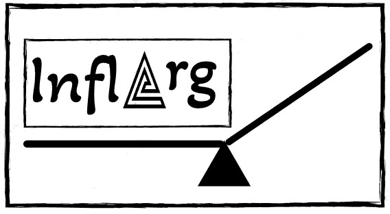

Somos una empresa dedicada a la evaluación diaria de inflación en Argentina. En esta página encontrarás información precisa sobre el incremento diario de cualquier categoría provista por el Indec. Inflarg te da la posibilidad de ingresar algún producto o servicio introdiciendolo en una línea de tiempo la cual verifica el aumento exacto desde un inicio (siendo este último el punto de partida como compra del mismo).
Registrate en nuestra página para formar parte de la red.
